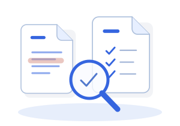

クラウドAIに入力した場合
入力した資料は、事務所の外へ送信されます。
送信後の保存・利用・削除の条件は、サービスや契約、設定により異なります。
クラウドAIは入力内容をサービス提供者側の環境へ送って処理します。保存・学習利用の条件は、サービス・契約・設定で異なります。
送信後の保存・利用・削除の条件は、サービスや契約、設定により異なります。
事務所が管理する環境にモデルを配置し、外部の生成AIサービスへ送らずに処理する構成を設計します。
個人情報保護委員会は、クラウド生成AIへ個人データを入力する際、利用目的に必要な範囲か、学習利用の有無などを確認するよう案内しています。公式の注意事項 ↗
※実際の通信範囲・保管先は、ネットワークや連携設定を含めて導入時に設計します。
資料の整理、書類案の作成、提出前の照合を支援します。



金額の不一致を、原資料で確認
情報の置き場所、根拠の確認、最終判断まで所内の手順に組み込みます。
どの資料に戻り、何を確かめ、どこまで書類に反映するか。民事・刑事の業務に合わせて、AIと担当者の流れを設計します。
届出書と添付資料を照合し、重複・訂正の可能性を人が確認する構成例
| 照合する項目 | 資料にある記載 |
|---|---|
| 債権者名 | A商事 / 株式会社A商事 |
| 届出額 | 120万円 / 100万円 |
| 請求の特定 | 3つの資料に INV-042 |
| 差額の所在 | 元本は同額、利息欄に20万円の差 |
請求番号は共通、差額は利息欄。名義の表記だけでまとめず、訂正の有無と差の理由を原本で確認します。
青い資料番号から、対応する元資料を確認できます
| 債権者候補 | 元本・利息の転記案 | 確認状況 | 根拠 |
|---|---|---|---|
| 株式会社A商事 | 元本100万円 / 利息は要確認元本100万円 / 利息0円 | 訂正・別件を確認中担当者が訂正届と確認 |
未確定の行は保留。どちらかの金額を自動で採用しません。訂正前の利息20万円 → 訂正後0円。採用理由と、訂正前後の届出を一緒に残します。
資料の値と入力先の定義を照合し、不足資料を切り分ける構成例
「毎月の手取りは 28万円。住所は転居予定です」
| 項目 | 整理する内容 |
|---|---|
| 収入の基準 | 28万円＝手取り、31.5万円＝支給総額 |
| 転記先の定義 | この書式では、直近月の支給総額 |
| 住所 | 転居後の住所が資料にない |
「収入」という同じ言葉でも、手取り・支給総額・対象期間が違えば、そのまま転記できません。
青い資料番号から、対応する元資料を確認できます
数字を拾うだけでなく、手取り・総額・対象月を区別します。確認できた収入だけを反映。住所の空欄を推測で埋めません。
複数の戸籍をつなぎ、確認できた関係と未取得の資料を分ける構成例
未取得
その後の身分事項と子の記載は、まだ確認できません。
| 照合する項目 | 関係図に反映する内容 |
|---|---|
| 人物の同一性 | 氏名・生年月日（1948年4月12日）が一致 |
| 前婚の記載 | 太郎・花子とは別に、二郎の記載 |
| 収集の不足 | 二郎の続きの戸籍が未取得 |
現在の記載だけで図を完成させず、前婚の記載と追加で必要な戸籍を、関係図の枝として残します。
青い資料番号から、対応する元資料を確認できます
関係図は記載を整理した下書きです。相続人の範囲や法的な評価は、担当者が確認して確定します。
実際のPoCにある金額・期限の不一致を使い、差戻しから承認までを示す例
| 確認する項目 | 書面案 | 照合する資料 |
|---|---|---|
| 支払額 | 300万円 | 280万円 |
| 返金期限 | 7月20日 | 7月31日 |
280万円の抜粋も、7月31日という認識も、そのまま正解とは扱いません。振込原本と合意内容の根拠を確認します。
青い資料番号から、対応する元資料を確認できます
不一致の検出は実際のPoCと同じサンプルです。確認後の値・履歴は、流れを説明する例です。
氏名・金額・資料は説明用の例です。業務ごとの処理は、書式・資料・確認手順に合わせて構築します。
書面の照合をデモで試す対象業務、資料、所内ルールを確認し、事務所内で運用できる構成を設計します。
対象業務と資料の形式を確認
モデル、権限、通信、保管先を決定
確認手順と既存書式に合わせて導入
クラウドAIは提供者側の環境で、ローカルAIは事務所が管理する環境で処理します。
案件資料を外部AIへ送らない構成を設計できます。更新、認証、バックアップの通信と保管先は導入時に確認します。
AIの出力は下書きです。内容の確認、法的判断、提出の承認は担当者が行います。
既存のひな形や入力ルールを確認し、活用する方法を提案します。
業務、書式、サーバー構成を確認したうえでお見積りします。
書類作成、資料整理、提出前の照合などからご相談いただけます。
AI利用ルールと対象業務を伺い、事務所内で運用できる構成をご提案します。